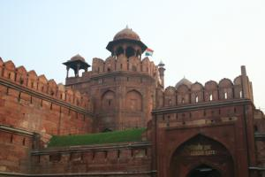

Le 25 novembre 2004,
Ca y est, l’avion sort ses trains d’atterrissage, nous commençons à apercevoir les lumières de Delhi... Malgré la fatigue, nous sommes tout excités a l’idée de commencer enfin notre aventure ! Nous trépignons d’impatience en attendant de sortir de l’avion... Nous récupérons nos bagages sans incident et nous nous dirigeons vers la sortie de l’aéroport pour chercher M. Das qui doit nous attendre avec sa pancarte indiquant ‘Michael’. Quelle ne fut pas notre surprise quand nous nous sommes retrouvés en plein milieu d’une soixantaine de personnes avec chacune une pancarte indiquant la personne à prendre. Nous avons cherché pendant un bon moment mais pas de trace de M. Das... Sans nous laisser démonter, nous l’avons appelé d’une cabine sur son portable. Il parlait un anglais-hindi que nous ne comprenions absolument pas... Pas facile pour se donner un lieu de rendez-vous dans l’aéroport ! Heureusement, un indien à côté de nous qui avait vu que nous n’arrivions pas à comprendre ce qu’on nous disait au téléphone, nous a proposé de lui parler en hindi et de nous traduire, dans un anglais assez proche du notre, leur conversation. Il nous a même escorté jusqu’au lieu de rendez-vous et quelques minutes plus tard, M. Das arrivait. Nous avons vraiment apprécié sa gentillesse qui était complètement gratuite et pour un premier contact avec la population locale, nous étions ravis !
Une fois dans le taxi, une folle course de l’aéroport dans l’hôtel s’ensuivit. Imaginez une autoroute bitumée a 2 voies comme chez nous... Déjà ici, la bande d’arrêt d’urgence compte comme une voie supplémentaire, mais nous n’étions pas au bout de nos surprises ! Le large chemin de terre battue qui se trouve au delà de la bande d’arrêt d’urgence (derrière les barrières de sécurité) constitue 2 voies de circulation en sus ! D’une banale autoroute à 2 voies, nous passons facilement à une 5 voies ! ! Sans parler de la conduite sportive des locaux... Quand on se retrouve coincés entre 2 camions à 3cm de chacun d’eux, on ne fait pas le fier. En tous cas, ça nous a bien fait rire malgré quelques moments de frayeur ! C’est vrai aussi que nous nous sommes demandés si nous n’étions pas sur une autre planète, tout est tellement différent de ce que nous connaissions jusqu’à présent. Malgré tout, c’est assez plaisant de s’engouffrer dans ce monde inconnu, où tout nos repères habituels ne valent plus rien. Nous n’avons ressenti aucune appréhension lorsque nous avons plongé à pieds joints dans l’aventure en arrivant à Dehli. On nous avait dit que cette ville serait un vrai choc pour des personnes de connaissant pas l’Inde. Ca n’a pas été le cas pour nous... Peut-être nous en a-t-on tellement parlé que nous nous attendions à pire ? Bien sûr, tout nous parait extravagant mais c’est loin d’être désagréable ! J’ai hâte de poursuivre notre aventure ! !
Après une nuit relativement courte dans notre petite guest-house tout à fait correcte (que nous avons trouvée grâce aux bons tuyaux de Gaëlle), nous sommes partis à la conquête de Delhi. Comment résumer cette journée en quelques lignes ?
Après avoir trouvé un petit restau où nous avons pu goûter un excellent (mais très épicé !) poulet au curry, notre objectif était de prendre nos billets de train pour le surlendemain afin de pouvoir rejoindre Gaëlle à Agra. Nous avons trouvé la gare sans difficulté et rejoint le bureau réservé aux étrangers (avec un tarif spécial bien sûr). A partir de la, le plus difficile a été de comprendre ou commençait la queue ! En fait, il fallait s’asseoir au bout d’une rangée de chaises et, lorsqu’une personne allait au guichet, tout le monde se déplaçait d’une chaise et ce jusqu’à ce que ce soit à notre tour de passer. Et si on s’endormait un peu, un vieux bonhomme rabougri nous hurlait de nous dépêcher ! ! C’était très folklorique...
Enfin notre billet en poche, nous avons entrepris d’aller visiter le Fort Rouge de Old Delhi. Apres avoir marché un peu, nous avons décidé d’essayer un pousse-pousse (rickshaw) ! ! Moi, j’ai adoré jusqu’au moment où nous nous sommes aperçu qu’il ne nous emmenait pas du tout dans la bonne direction. Il était parti pour l’aéroport ! ! Bref, comme nous n’arrivions pas a nous comprendre, nous avons laissé tomber notre bonhomme pour tenter notre chance avec un auto-rickshaw. Nous avons eu plus de succès et nous sommes bien arrivés a destination.
 Nous avons beaucoup aimé la quiétude du Fort Rouge en comparaison du brouhaha permanent de la rue. C’est vrai qu’entre le bruit des klaxons venant de partout, le harcèlement des rickshaws et des gens dans la rue qui veulent absolument nous faire entrer dans un office de tourisme afin de nous arnaquer, un peu de calme ne fait pas de mal ! En plus, l’architecture des bâtiments était vraiment magnifique. Nous sommes restés jusqu’à la fermeture en ayant bien admiré et profité de ce moment.
Nous avons ensuite rejoint Marcin, un ami d’un ami de Michaël, qui vit dans le New Delhi et travaille à l’ambassade de France. On nous avait dit que Delhi était très contrastée, nous en avons eu la preuve en un jour ! La place où se situe l’ambassade à New Delhi est à l’opposé des places que l’on peut trouver dans le Old Delhi : très peu de rickshaws, de la verdure, beaucoup d’espace, peu de monde... Par contre toujours autant de pollution ! Nous commencions à pas mal tousser et à avoir les yeux qui piquent à la fin de la journée... Dans les rickshaws, nous nous prenons toute la fumée des gaz d’échappement en pleine figure, il est parfois difficile de respirer confortablement ! Constamment, un voile de brouillard enveloppe Delhi ... La pollution doit difficile à vivre quotidiennement ! Même les indiens s’en plaignent ... En tous cas, ça n’enlève rien à la gentillesse des gens, toujours prêts à nous aider du mieux qu’ils le peuvent. Ca change de Paris ! !
Nous avons donc rejoint Marcin qui nous a emmenés dans un superbe restaurant indien (un des plus chics !) ou nous avons formidablement bien mangé pour l’équivalent de 10 euros (apéro compris !). Nous n’avions l’air de rien, habillés en tenue de routard dans ce beau restaurant, mais bon ... Ici, dès que tu es blanc, tu peux rentrer dans tous les hôtels les plus majestueux ! Etre blanc est synonyme de richesse en Inde. Nous avons donc fait la connaissance de Marcin durant cette soirée qui fut très agréable. Après le tumulte de la journée, manger dans ce bon et tranquille restaurant nous a fait un bien fou ! Nous sommes ensuite rentrés tranquillement en rickshaw avec la sensation d’avoir bien rempli notre journée et de nous en être mis plein les yeux ! Vivement la suite ...
Eve-Laure
{kind=link}